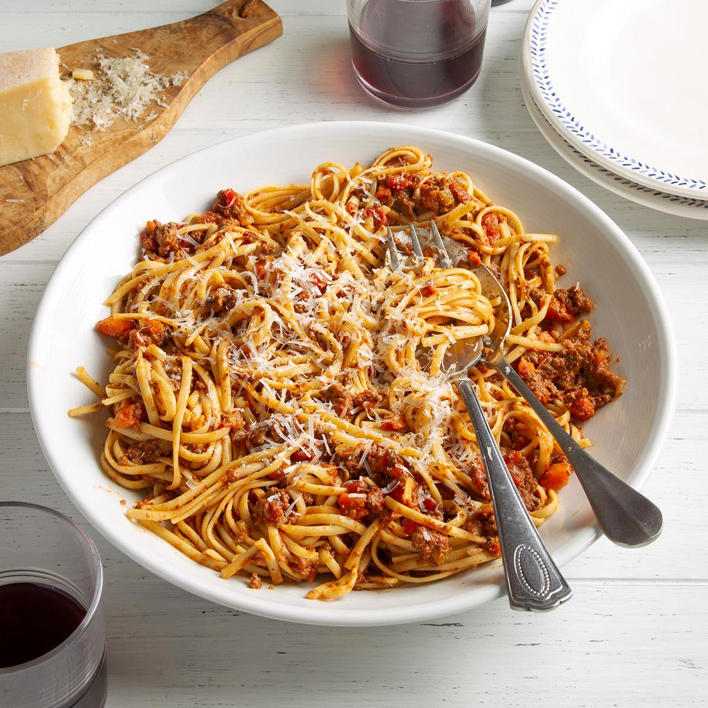

Bolognese Sauce Recipe

This classic Italian sauce simmers for hours to develop maximum flavor. Made with
a blend of ground beef, pork, and Italian sausage, it's great with fresh pasta.
Bolognese sauce is a classic Italian sauce for pasta made with ground meat such
as beef or pork. It's slow cooked with a soffritto of onions, carrots, and celery,
tomatoes, and milk to give it a creamy texture.
Pronounced "bow-luh-nez," the sauce comes from the Bologna region of Italy, hence
the name. Given the cultural history of this sauce, there are many variations, but
they all seem to follow a basic structure of ground meat, a soffritto, a bit of
tomato, some milk, and long, slow cooking.
| Prep Time |
Cook Time |
Total Time |
| 15 mins |
3 hrs 30 mins |
3 hrs 45 mins |
Ingredients
- 2 ounces pancetta , finely chopped
- 1 medium Spanish onion or yellow onion, finely chopped
- 1 celery rib, finely chopped
- 1 carrot, finely chopped
- 3 tablespoons unsalted butter
- 12 ounces ground beef
- 4 ounces ground pork
- 4 ounces italian sausage, casings removed, if needed
- Dash ground cloves
- Dash ground cinnamon
- 1 teaspoon freshly ground black pepper
- 2 pounds peeled and chopped tomatoes
(or one 28-ounce can whole peeled tomatoes, packed in water)
- 1 cup whole milk
- 1/2 teaspoon sea salt
Steps
- Make the soffritto
- Add the meats
- Add the spices
- Add the tomatoes and simmer
- Simmer for 2 1/2 hours
- Taste and Serve
Nutrition facts (per serving)
| 436 |
31g |
11g |
27g |
| Calories |
Fat |
Carbs |
Protein |